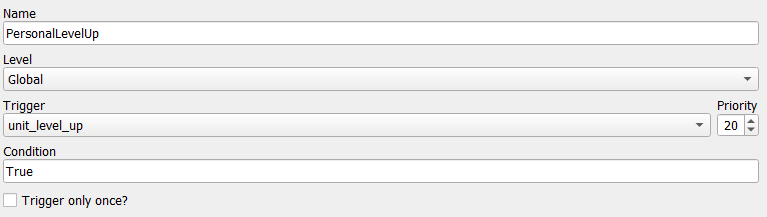
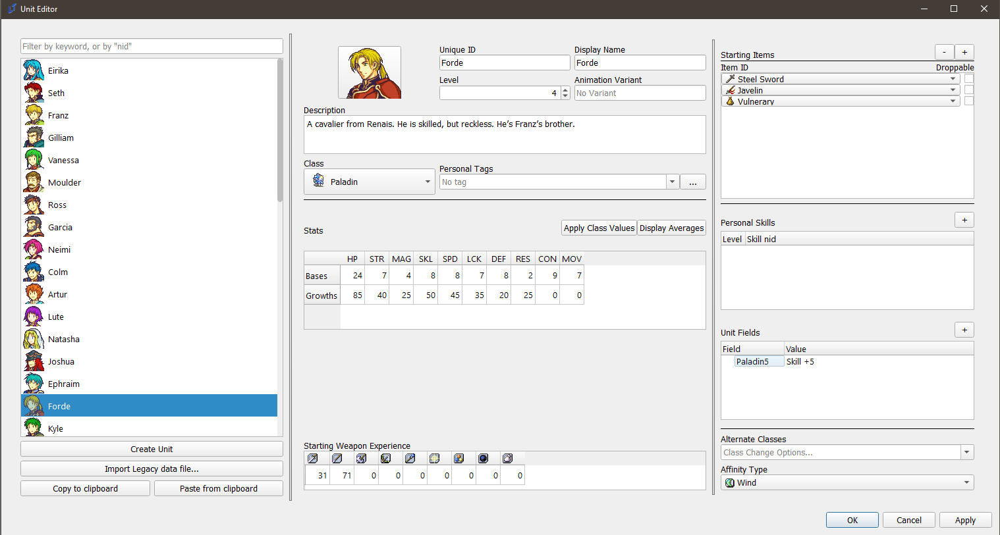
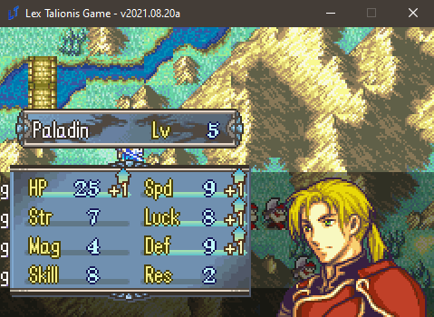
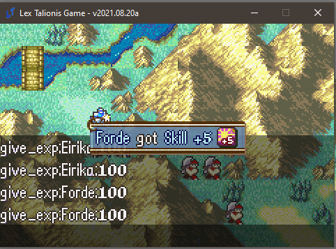

Promotion Personal Skills Tutorial
Problem Description
I would like to add personal skills that are gated behind promotions. For example, I want Franz to learn Aegis at Paladin level 5, and Pavise at Great Knight level 5. However, I want Forde to learn Astra at Paladin 5, and Sol at Great Knight 5. The current system of class and personal skills cannot approximate this behavior - personal skills will trigger on any class of a certain unit, whereas class skills will be learned by every character who is of that class - even generics.
Solution
Eventing. The solution is always eventing. Via the give_skill event command, we can give skills conditionally to any unit. The event will be as follows.

if;unit.get_field(unit.klass + str(unit.level)) and unit.get_field(unit.klass + str(unit.level)) not in [skill.nid for skill in unit.skills]
give_skill;{unit};{eval:unit.get_field(unit.klass + str(unit.level))}
end
This event is fairly basic. Every time any UNIT levels up, this event will check if the UNIT has a field named its klass nid plus its level. For instance, if Forde is a Paladin, and levels up to level 5, then this event will trigger, checking if Forde has a field called Paladin5. If Forde does not, then the event deactivates. If Forde does, then the event will check if Forde already has the skill named in the field. Finally, if Forde has the Paladin5 field, and he does not have the skill in the field, the event will grant him the skill named in the field.
Note: You must use the correct NIDs for both the class name and the skill in the fields, otherwise it will not work, for obvious reasons.
Like so (please ignore the debug terminal in the background):



Voila!